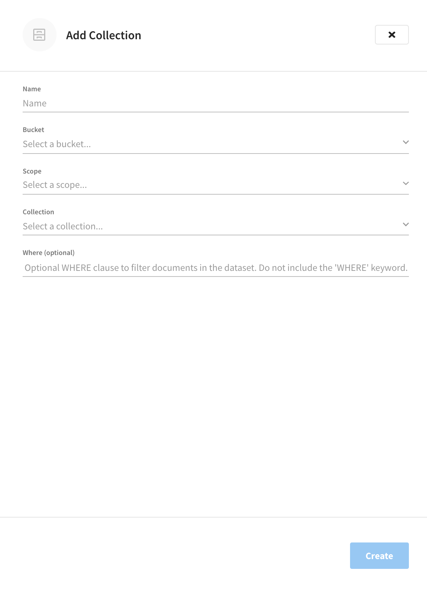

Analytics Workbench
The Analytics Workbench provides a rich graphical user interface to perform Analytics query development.
Using the Analytics Workbench, you can conveniently explore data, create, edit, run, and save N1QL for Analytics queries, view and save query results, explore dataverses/scopes and datasets/collections, and view the Couchbase buckets which are being shadowed — all in a single window.
Features of the Analytics Workbench include:
-
A single, integrated visual interface to perform Analytics query development and testing.
-
Easy viewing and editing of complex queries by providing features such as multi-line formatting, copy-and-paste, syntax coloring, and easy cursor movement.
-
View the dataverses/scopes and datasets/collections available to the Analytics service and the Couchbase buckets that are being shadowed.
-
Display query results in JSON or table formats. You can also save the query history to a file on disk.
For more information on Couchbase Analytics, see the Analytics section in our Couchbase Server documentation.
| The Analytics Workbench is only available on clusters that are running the Analytics Service. |
Accessing the Analytics Workbench
If a cluster is running the Analytics Service, the Analytics Workbench can be accessed under the cluster’s Tools > Analytics Workbench tab.
The Analytics Workbench consists of three working areas:
-
The Analytics Editor, at the top of the Analytics Workbench.
-
The Analytics Query Results and Plans, at the bottom of the Analytics Workbench.
-
The Analytics Scopes, to the right of the Analytics Workbench.
Using the Analytics Query Editor
The Query Editor is where you build and run queries. Enter a query into the Query Editor using the N1QL for Analytics language. Since large result sets can take a long time to display, it’s recommended that you use the LIMIT clause as part of your query when appropriate.
The Query Editor provides syntax highlighting: for easy viewing, N1QL keywords, numbers, and string literals are differently colored.
After entering a query, you can execute the query to view the results or view the query plan.
Add a Collection
| Collections are only used with clusters using Couchbase Server 7.0+ |
The Analytics Workbench allows you to add collections to make them available in Analytics. To create an Analytics collection on a local link:
-
Inside the Analytics Scopes area, click the Add Collection (+) button next to the link where you want to create the collection.
This opens the Add Collection flyout.
 -
In the Name box, enter a name for the Analytics collection.
-
Use the Bucket, Scope, and Collection drop-down lists to specify the data source for this Analytics collection.
-
(Optional) If needed, in the Where field, enter an expression to filter the documents in the collection. You must not include the WHERE keyword, and the expression must be deterministic. For example,
activity = "eat". -
Click Create add the collection.
The new collection will appear just below the local link.
Run an Analytics Query
To run the query, click Execute.
You can also execute queries by typing a semi-colon (;) at the end of the query and hitting Enter.
|
When the query is running, the Execute button changes to Cancel, which allows you to cancel the running query. When you cancel a running query, it stops the activity on the cluster side as well.
When you execute a query, the results are displayed in the Query Results area. There are two ways to view the query results: in JSON format or Table format. By default, when you execute a query, the JSON tab is selected in the Query Results area, showing the results in JSON format.
Explain an Analytics Query
Each time a query is executed, an EXPLAIN command is automatically run in the background to retrieve the query plan for that query. You may also generate the query plan without running the query by clicking Explain.
You can view the query plan in the Query Results area.
Viewing the Query Results
The Query Results area enables you to view the query results and the query execution plan.
The figures in this section display the result of the following query:
SELECT meta(bw) AS meta, bw AS data
FROM breweries bw
WHERE meta(bw).id = 'kona_brewing';
Query Metrics
When a query finishes, the query metrics for that query are displayed between the Query Editor and the Query Results areas.
-
Status icon — Shows the status of the query. Possible icons include
✓(success) and!(failure). -
Last Run — The time at which the query was last executed.
-
RTT (Round-trip time) — the total time it took to send the request and receive the response from the server.
-
Elapsed — Shows the overall query time.
-
Execution — Shows the query execution time.
-
Docs — Shows the number of returned documents.
-
Size — Shows the size in bytes of the query result.
JSON Format
The JSON tab formats the results to make the data easy to read. You can also expand and collapse objects and array values using the small arrow icons next to the line numbers.
Table Format
The Table tab presents the results in a tabular format. The tool converts the JSON documents to HTML tables and presents sub-objects or sub-arrays as sub-tables. This format works well for queries that return an array of objects.
Plan Text
The Plan Text tab shows the query execution plan in JSON format.
If you have run the query, a detailed query execution plan is shown, which includes information about how long each step in the plan took to execute. If you clicked Explain without running the query, the intended query execution plan is shown, without the details that would be included if you actually executed the query.

View Query History
The Analytics Workbench maintains a history of all the queries executed. If you edit a previous query and execute it, the new query is stored at the end of the history. The history is persistent across browser sessions. The query history only saves queries; due to limited browser storage, it does not save query results. Thus, when you restart the browser or reload the page, you can see your old queries, but you must re-execute the queries if you want to see their results.
| Clearing the browser history clears the history maintained by the Query Editor as well. |
Clicking the History button above the Query Editor opens the Query History flyout menu:

You can scroll through the entire query history, and click on an individual query to be taken to that particular point in the history.
-
Search history — You can search the query history by entering text in the Filter Queries search box. All matching queries are displayed.
-
Delete a specific entry — Click the Trash icon next to a particular query to delete it from the history.
This can be useful if you want a more manicured history for when you’re exporting it for future use. -
Delete all entries — Click Clear to delete the entire query history.
Import Query
You can load queries from a file into the Query History. In the Query History, click Import to open the Import Query History flyout menu.

Click Import JSON and then select a local .json file that you wish to import.
After clicking Save, the content of the file is added to the query history.

Modify Query Settings
You can specify various settings for the Analytics Workbench and the Analytics Service by clicking Settings. This opens the Query Settings flyout menu.
Configure the following settings and click Submit to save the configuration.
| Option | Description |
|---|---|
Timeout |
The timeout parameter can be used to limit the running time of a query. |
Scan Consistency |
The consistency guarantee constraint for index scanning. Select one of the following options:
For more information, refer to Analytics Query Parameters in the Couchbase Server documentation. |
Transaction Timeout (Couchbase Server 7.0+) |
The timeout parameter that limits the running time of a transaction. |
Named Parameters |
For the prepared queries, this option allows you to specify any number of named parameters. Click the + button to add new named parameters, and the - button to remove the parameters. Named parameters must start with the dollar sign ($) for use in prepared queries. Otherwise, they are interpreted as parameters to the Analytics REST API. |
Positional Parameters |
For the prepared queries, this option allows you to specify values for $1, $2, and so on up to as many positional parameters as you have. Click the + button to add new positional parameters, and the - button to remove the parameters. The parameters are automatically labeled as "$1", "$2", and so on. |
Data Insights / Analytics Scopes
The Analytics Scopes area shows scopes, any links with the link type and connection status, and collections that are being shadowed.
This area also provides buttons to:
-
Add a remote link. Create remote links to analyze data on Amazon S3.
-
Add collection. Specify a bucket, scope, and collection that you would like to use with the Analytics Workbench.
-
Drop a link (trash can). Remove a link from the Analytics Workbench.
-
Drop a collection. Remove an analytics collection from the Analytics Workbench.
Analytics Links
The Links flyout in the Analytics Workbench enables you to create, manage, and delete remote links. Refer to Analytics Links for details.
Analytics Monitor
The Monitor flyout in the Analytics Workbench enables you to monitor Analytics queries and metrics. Refer to Analytics Monitor for details.